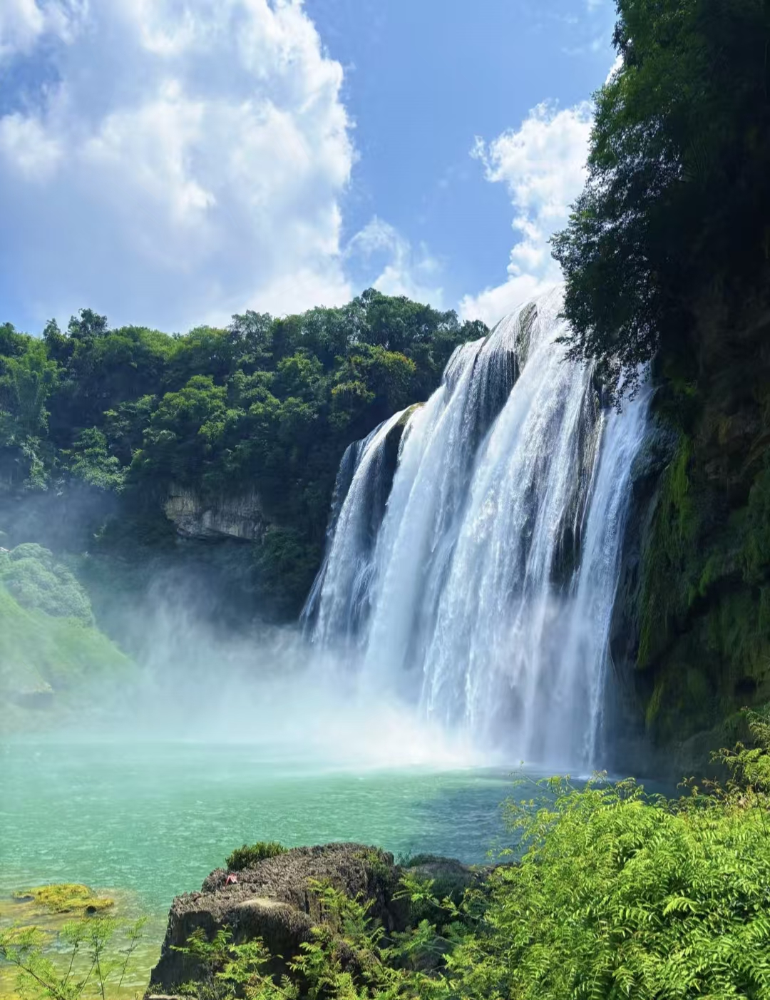
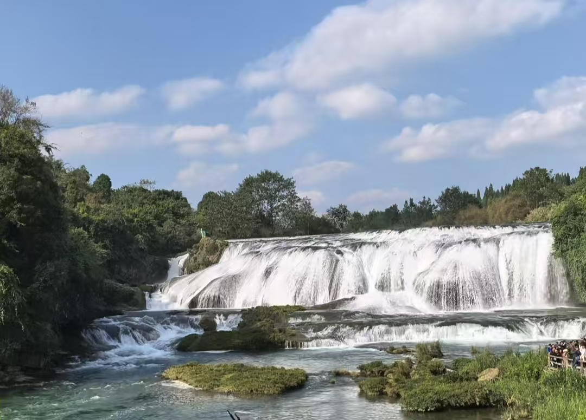
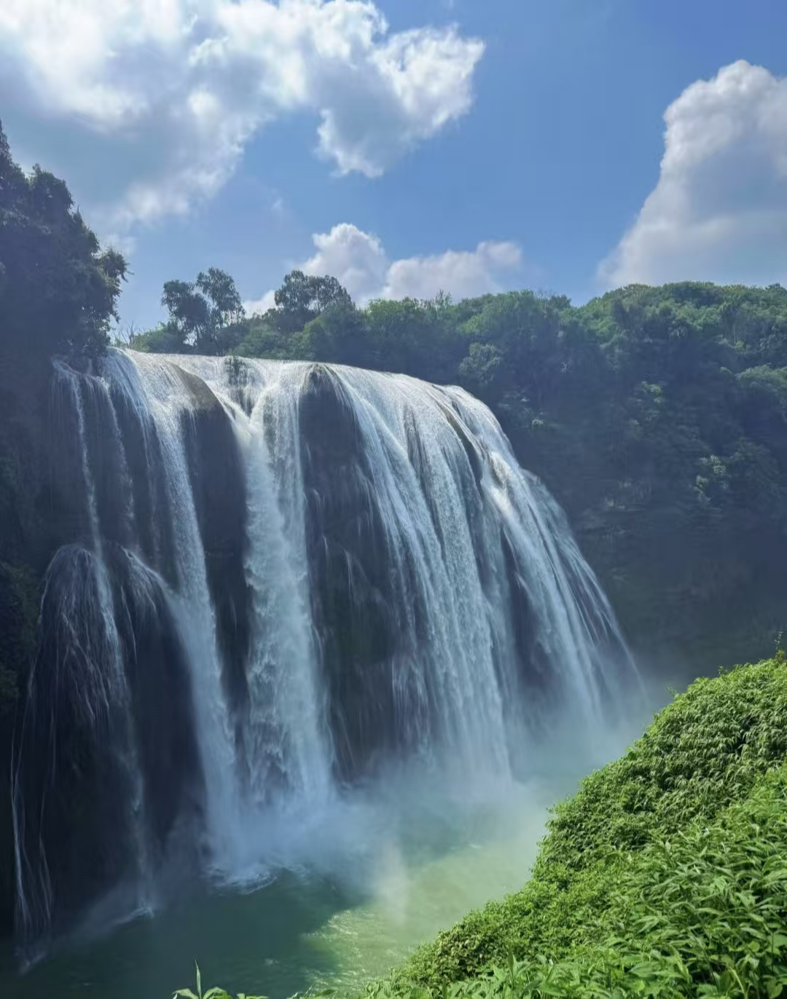
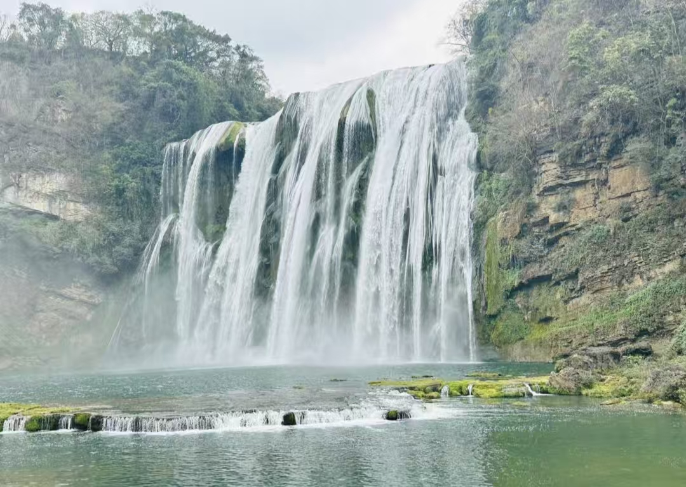
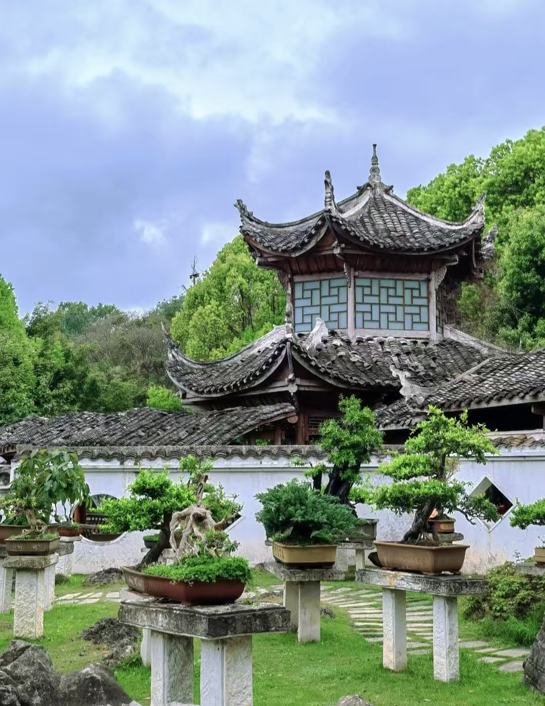

黄果树瀑布
亚洲第一大瀑布，大自然的鬼斧神工
景点简介
黄果树瀑布位于中国贵州省安顺市镇宁布依族苗族自治县，属于珠江水系的支流白水河。瀑布的高度为77.8米，宽度为101米，其中主瀑高67米，宽83.3米。黄果树瀑布是黄果树瀑布群中规模最大的一级瀑布，以其浩大的水势和壮观的景色著称。
🌍 地理位置：
贵州省安顺市镇宁布依族苗族自治县
⏰ 最佳游玩时间：
上午10点-12点
🎫 门票价格：
160元/人
⏱️ 建议游玩时长：
3-4小时

主要景观

主瀑布
主瀑布高77.8米，宽101米，水流从高处直泻而下，气势磅礴，声如洪钟。阳光照射时，瀑布前常出现彩虹，景色壮丽。

水帘洞
水帘洞位于贵州省安顺市镇宁布依族苗族自治县黄果树风景名胜区内，为黄果树瀑布群中被瀑身贯穿的天然洞穴，落差达339米，是国家5A级旅游景区。该洞穴全长134米，分布六个洞窗、五个洞厅及三股洞泉，形成倒挂仙人掌、水晶宫等景观，并以动态双道彩虹为特色，系世界唯一可从内部多角度观赏的瀑布洞穴

犀牛潭
瀑布下方的深潭，传说曾有犀牛在此出没。潭水碧绿清澈，与瀑布形成鲜明对比。

盆景园
景观融合姑苏园林与贵州山野特色，包含高达两米的土壤树桩造型、微缩景观及“盘龙云海”“音乐石”等观赏石，展示了贵州独特的地质风貌和园艺艺术。
游览攻略
🚶♂️ 推荐路线
- 入口 → 盆景园：欣赏各种奇石盆景（约30分钟）
- 盆景园 → 观瀑台：远观瀑布全景（约20分钟）
- 观瀑台 → 水帘洞：穿越瀑布（约1小时）
- 水帘洞 → 犀牛潭：近距离观赏瀑布（约30分钟）
- 犀牛潭 → 出口：游览结束（约20分钟）
📸 最佳拍摄点
- 观瀑台：拍摄瀑布全景的最佳位置
- 水帘洞口：可拍摄瀑布与洞口的特殊角度
- 犀牛潭边：拍摄瀑布倒影和近景
- 上午10-12点：阳光照射角度最佳，容易拍到彩虹
⚠️ 注意事项
- 水帘洞内湿滑，请注意脚下安全
- 瀑布周围水汽较大，建议携带雨具
- 旺季游客较多，建议错峰游览
- 保护环境，不要乱扔垃圾
交通信息
🚌 公共交通
从贵阳出发：
- 贵阳旅游集散中心乘坐旅游专线大巴
- 发车时间：8:00、9:00、10:00
- 车程：约2小时
- 票价：60元/人
🚗 自驾路线
贵阳 → 黄果树：
- 贵黄高速 → 镇宁出口 → 黄果树景区
- 全程约128公里
- 车程约2小时
- 景区停车场收费：10元/天
🚄 高铁到达
安顺西站：
- 从安顺西站乘坐景区直通车
- 车程约40分钟
- 票价：25元/人
- 班次：每30分钟一班
四季特色
🌱 春季（3-5月）
特色：水量充沛，瀑布壮观
看点：春水初涨，瀑布气势最盛
建议：携带雨具，注意保暖
☀️ 夏季（6-8月）
特色：水量最大，凉爽宜人
看点：避暑胜地，彩虹频现
建议：做好防晒，注意防滑
🍁 秋季（9-11月）
特色：水量适中，景色优美
看点：秋高气爽，能见度高
建议：最佳摄影季节
❄️ 冬季（12-2月）
特色：水量较小，别样风情
看点：冰瀑奇观，游客较少
建议：注意保暖，部分区域可能关闭
周边景点推荐
天星桥景区
距离：约5公里
特色：水上石林、溶洞景观
游玩时间：2-3小时
龙宫景区
距离：约30公里
特色：地下溶洞、水上洞穴
游玩时间：3-4小时
陡坡塘瀑布
距离：约3公里
特色：宽而平的瀑布景观
游玩时间：1小时